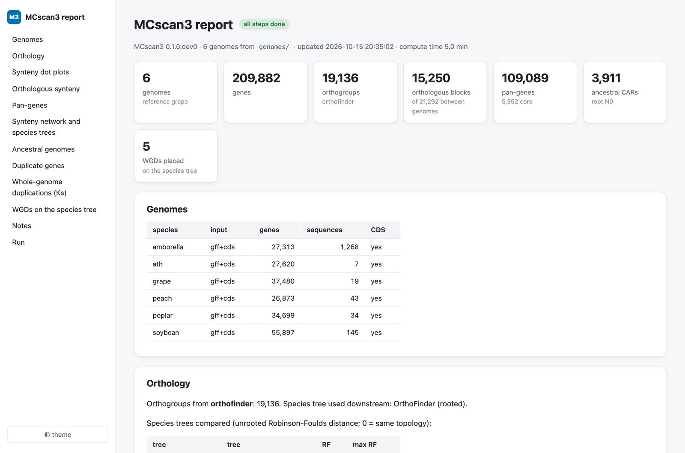

One command: the pipeline¶
mcscan3 pipeline run takes a directory of genomes and runs a full comparative analysis,
resuming where it stopped if interrupted, and writes an HTML report.
mcscan3 pipeline inputs genomes/ # what was found, before running
mcscan3 pipeline run genomes/ -o results --ref grape --cpus 16 --ks
open results/report.html
Inputs¶
Put one or more files per genome in a directory, named <genome>.<anything>:
| Files | Mode | What happens |
|---|---|---|
grape.gff3.gz + grape.dna.fa.gz |
genome | longest coding transcript per gene, CDS spliced and translated (prep genome) |
grape.gff3.gz + grape.cds.fa.gz [+ grape.pep.fa.gz] |
gff+cds | longest transcript per gene; the GFF attribute matching the FASTA names is found automatically |
grape.bed + grape.cds / grape.pep |
processed | used as given; the BED may be in MCScanX layout |
FASTA files are classified by their names (cds, pep, protein, dna, genome, ...) or, if
the name does not tell, by their content. A sample sheet (--samples, columns
species, gff, genome, bed, cds, pep) overrides the detection. Protein records are matched to the
genes through their headers (transcript:, gene:, .CDS / -P suffixes); when they do not
match, proteins are translated from the CDS.
Steps¶
- inputs:
data/<genome>.bed/.cds/.pep. - orthology: OrthoFinder when installed (
--orthofinder auto, the default;yesto require it): orthogroups, orthologues, gene trees and a rooted species tree. Otherwise (no) MCscan3's own: DIAMOND all-against-all, MCL orthogroups, reciprocal best hits. - synteny:
ortholog runfor every pair of genomes and each genome against itself. - soi: the Orthology Index of every block;
soi/<a>.<b>.soi.anchorskeep orthologous synteny (--soi-cutoff). - pan: pan-genes linked by anchors that are orthologous synteny and in one orthogroup,
completed with the other members of their orthogroups (
<genome>_nonsynteniccolumns), and a riparian plot. - network: synteny network, clusters, profiles and a network species tree; the trees are compared and disagreements reported.
- ancestral: ancestral gene orders at every node of the species tree, ancestral chromosomes painted on every genome, and all karyotypes on the tree.
- dup: duplicate-gene classes of every genome.
- wgd (
--ks): anchor-pair Ks (MCscan3's LPB93 estimator: no PAML needed), block-median Ks and mixture models per genome. - wgd-consensus (
--ks): WGDs placed on the species tree by consensus of four lines of evidence (WGD guide). - report:
report.html.
The species tree matters
Ancestral genomes and WGD placement depend on the rooted species tree. With few genomes, or
genomes with WGDs, OrthoFinder's and the synteny-network trees can both be wrong (on six
eudicots neither matched the accepted tree). The report flags disagreements; give a trusted
tree with --tree species.nwk when it matters.
Outputs¶
results/
run.json what ran: status, time and notes of every step, and the results shown in the report
samples.tsv what was found
data/ prepared <genome>.bed/.cds/.pep
orthology/ OrthoFinder results or MCscan3's own orthogroups
synteny/ ortholog run per pair (.last, .anchors, .lifted.anchors, dot plots)
soi/ Orthology Index per block, .soi.anchors
pan/ pangenes.tsv, riparian.png
network/ net.edges/.clusters/.profile.tsv, net.tree.nwk
ancestral/ anc.<node>.cars.tsv, <node>.karyotype.png, tree.karyotype.png
dup/ <genome>.<class>.pairs, <genome>.genes
wgd/ <genome>.anchor.ksd.tsv, .blocks.tsv, .blocks.png, consensus.tsv/.png
report_files/ figures and interactive dot plot data used by the report
report.html
Steps that fail are listed in the report and in a table printed at the end of the run; the others still run. Re-running the same command skips finished work.
Re-running some steps¶
--steps re-runs only the steps named; the results of the others are kept from run.json:
mcscan3 pipeline run genomes/ -o results --steps ancestral,report --tree species.nwk
mcscan3 pipeline report results # only rebuild report.html (e.g. after an update)
The report¶
report.html is one self-contained page (no internet access needed; share the whole results/
directory or just report.html with report_files/). It has:
- summary cards: genomes, genes, orthogroups, orthologous blocks, pan-genes, ancestral CARs and WGDs placed;
- interactive dot plots of every genome pair and every genome against itself: pick a pair, scroll to zoom, drag to pan, click a chromosome name to zoom to it, hover a dot for its two genes, block, orientation and Orthology Index; colour by orientation, block or Orthology Index; download the view as PNG;
- pan-genes (core, shell, private), riparian plot, synteny network and species trees, ancestral karyotypes on the tree, duplicate-gene classes as stacked bars, Ks mixtures and WGDs on the species tree;
- the run: every step with its status and time, and every note.
Figures open full size on click and tables sort by clicking a column header. The page follows the system's light or dark mode, with a toggle.

Run time¶
Six plant genomes (27,000-56,000 genes each) on 10 CPUs: OrthoFinder is the longest step (hours
on a laptop; much less on a server); synteny for 21 pairs takes about 30 minutes; the other steps
minutes each; --ks adds anchor Ks of every genome (native LPB93: minutes) and the WGD consensus.